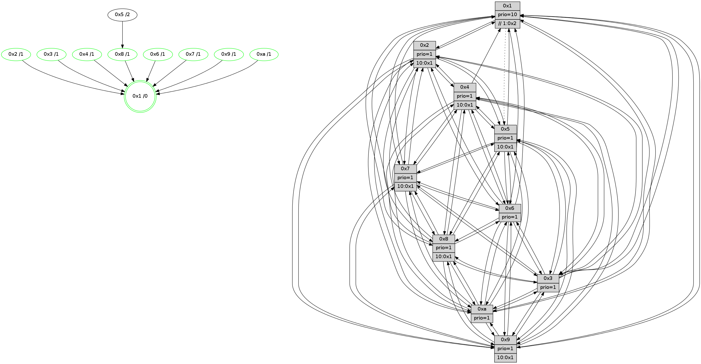

>> << IDX [start] -100 -25 -5 +0 +5 +25 +100 [1185.00942016]
 Previous packets
----------------------------------------------------------------------
1180.260655 beacon01(faad) #0 coord=01,02,03,04,05,06,07,0a,09,08 cycle=688.0ms assoc
-- color-indic=1 64 ae 29
1180.270638 beacon02(faad) #0 coord=01,02,03,04,05,06,07,0a,09,08 cycle=688.0ms assoc 64 3d 18
1180.280639 beacon03(faad) #0 coord=01,02,03,04,05,06,07,0a,09,08 cycle=688.0ms assoc 64 47 55
1180.290638 beacon04(faad) #0 coord=01,02,03,04,05,06,07,0a,09,08 cycle=688.0ms assoc 64 30 bf
1180.300638 beacon05(faad) #0 coord=01,02,03,04,05,06,07,0a,09,08 cycle=688.0ms assoc 64 4a f2
1180.310638 beacon06(faad) #0 coord=01,02,03,04,05,06,07,0a,09,08 cycle=688.0ms assoc 64 c4 25
1180.320639 beacon07(faad) #0 coord=01,02,03,04,05,06,07,0a,09,08 cycle=688.0ms assoc 64 be 68
1180.330644 beacon0a(faad) #0 coord=01,02,03,04,05,06,07,0a,09,08 cycle=688.0ms assoc 64 cf 63
1180.340643 beacon09(faad) #0 coord=01,02,03,04,05,06,07,0a,09,08 cycle=688.0ms assoc 64 41 b4
1180.350644 beacon08(faad) #0 coord=01,02,03,04,05,06,07,0a,09,08 cycle=688.0ms assoc 64 3b f9
1180.363465 [Hello(10): seq=686 sym=6,2,3,8,7,5,9,4,1 sysInfo=hasWarning stat=6:0,1,0,0/2:2,14,3,10/3:4,13,7,11/8:0,13,12,2/7:15,0,4,6/5:14,13,14,14/9:15,6,4,3/4:8,15,4,0/1:1,2,10,1]
1180.366190 [Hello(4): seq=753 sym=5,7,6,2,3,9,8,10,1 sysInfo= stat=5:7,7,0,15/7:1,1,5,1/6:12,11,2,12/2:13,14,12,14/3:8,7,4,12/9:5,1,7,11/8:3,10,1,6/10:9,3,12,13/1:8,5,2,1]
1180.369511 [Hello(8): seq=697 sym=5,2,3,4,9,6,7,10,1 sysInfo=hasWarning stat=5:1,2,6,0/2:11,12,4,10/3:4,2,7,0/4:0,7,9,10/9:5,9,9,3/6:4,15,5,13/7:1,3,3,0/10:11,5,12,4/1:0,15,0,0]
1180.372029 [STC(4)->1 #0.184 tree-change,inconsistent-stability,stable,to-color d=1]
1180.373605 [STC(8)->1 #0.184 tree-change,inconsistent-stability,stable,to-color d=1]
1180.374938 [Color(4) seq=310 @0:0 prio=1 >10.@1,1.@2,1.@3,1.@5]
1180.377035 [Hello(7): seq=753 sym=2,3,5,6,4,8,9,10,1 sysInfo=hasWarning stat=2:1,5,12,1/3:6,14,12,0/5:8,11,7,1/6:4,2,8,9/4:8,5,6,1/8:4,5,0,0/9:0,2,0,0/10:14,4,13,5/1:1,15,1,0]
1180.380020 [Hello(9): seq=697 sym=2,5,3,4,7,6,8,10,1 sysInfo=hasWarning stat=2:1,0,14,8/5:10,12,14,5/3:3,9,4,0/4:10,13,3,0/7:5,5,3,1/6:1,6,11,11/8:1,10,0,3/10:7,4,5,4/1:13,8,3,1]
1180.384453 [STC(9)->1 #0.184 tree-change,inconsistent-stability,stable,to-color d=1]
1180.386371 [Color(8) seq=352 @0:0 prio=1 >10.@1,1.@2,1.@3,1.@4]
1180.388777 [Color(9) seq=326 @0:0 prio=1 >10.@1,1.@2,1.@3,1.@4]
1180.392051 [Color(1) seq=434 @0:0 prio=10 >>1.@2,1.@3,1.@4]
1180.396921 [STC(7)->1 #0.184 tree-change,inconsistent-stability,stable,to-color d=1]
1180.399205 [Color(7) seq=299 @0:0 prio=1 >10.@1,1.@2,1.@3,1.@4]
----------------------------------------------------------------------
1181.048785 beacon01(faad) #0 coord=01,02,03,04,05,06,07,0a,09,08 cycle=688.0ms assoc
-- color-indic=1 64 9a 31
1181.058766 beacon02(faad) #0 coord=01,02,03,04,05,06,07,0a,09,08 cycle=688.0ms assoc 64 09 00
1181.068767 beacon03(faad) #0 coord=01,02,03,04,05,06,07,0a,09,08 cycle=688.0ms assoc 64 73 4d
1181.078768 beacon04(faad) #0 coord=01,02,03,04,05,06,07,0a,09,08 cycle=688.0ms assoc 64 04 a7
1181.088767 beacon05(faad) #0 coord=01,02,03,04,05,06,07,0a,09,08 cycle=688.0ms assoc 64 7e ea
1181.098768 beacon06(faad) #0 coord=01,02,03,04,05,06,07,0a,09,08 cycle=688.0ms assoc 64 f0 3d
1181.108768 beacon07(faad) #0 coord=01,02,03,04,05,06,07,0a,09,08 cycle=688.0ms assoc 64 8a 70
1181.118774 beacon0a(faad) #0 coord=01,02,03,04,05,06,07,0a,09,08 cycle=688.0ms assoc 64 fb 7b
1181.128773 beacon09(faad) #0 coord=01,02,03,04,05,06,07,0a,09,08 cycle=688.0ms assoc 64 75 ac
1181.138773 beacon08(faad) #0 coord=01,02,03,04,05,06,07,0a,09,08 cycle=688.0ms assoc 64 0f e1
1181.149705 [Hello(1): seq=663 sym=4,2,9,5,10,3,8,6,7 sysInfo=coloring-mode-on,ColoringModeRequestCalled stat=4:7,5,4,5/2:15,0,6,2/9:0,1,0,0/5:8,8,14,7/10:8,10,12,6/3:2,4,0,7/8:6,3,0,3/6:0,5,7,13/7:8,6,2,14]
1181.152742 [Hello(5): seq=754 sym=7,6,4,3,9,8,10,2 sysInfo=hasWarning stat=7:10,4,10,13/6:9,13,10,2/4:7,12,2,13/3:12,8,2,14/9:13,8,2,9/8:5,6,14,2/10:0,4,1,8/2:7,11,3,6]
1181.155425 [STC(5)->8-.->1 #0.184 tree-change,inconsistent-stability,to-color d=2]
1181.157059 [Color(10) seq=343 @0:0 prio=1]
1181.159617 [Hello(6): seq=754 sym=2,3,5,4,7,9,8,10,1 sysInfo=hasWarning stat=2:2,4,0,0/3:14,10,0,12/5:12,2,2,1/4:14,3,13,5/7:1,12,8,12/9:15,7,6,8/8:3,1,1,5/10:11,6,5,12/1:4,13,0,1]
1181.162309 [Hello(3): seq=754 sym=1,7,6,2,4,8,9,10,5 sysInfo=hasWarning stat=1:0,13,13,0/7:3,13,15,12/6:7,15,1,0/2:6,11,2,0/4:13,10,2,11/8:15,9,12,4/9:10,0,5,14/10:5,7,13,4/5:11,0,9,15]
1181.165782 [Color(3) seq=383 @0:0 prio=1]
1181.167050 [Color(6) seq=386 @0:0 prio=1]
1181.169173 [Hello(2): seq=750 sym=4,5,7,6,3,9,8,10,1 sysInfo=hasWarning stat=4:10,15,8,11/5:13,11,13,0/7:4,10,9,14/6:10,2,12,11/3:1,15,12,9/9:1,1,1,7/8:13,12,7,11/10:13,7,2,10/1:5,2,12,0]
1181.173293 [Color(2) seq=330 @0:0 prio=1 >10.@1,1.@3,1.@4,1.@5]
----------------------------------------------------------------------
1181.836915 beacon01(faad) #0 coord=01,02,03,04,05,06,07,0a,09,08 cycle=688.0ms assoc
-- color-indic=1 64 26 34
1181.846896 beacon02(faad) #0 coord=01,02,03,04,05,06,07,0a,09,08 cycle=688.0ms assoc 64 b5 05
1181.856899 beacon03(faad) #0 coord=01,02,03,04,05,06,07,0a,09,08 cycle=688.0ms assoc 64 cf 48
1181.866897 beacon04(faad) #0 coord=01,02,03,04,05,06,07,0a,09,08 cycle=688.0ms assoc 64 b8 a2
1181.876899 beacon05(faad) #0 coord=01,02,03,04,05,06,07,0a,09,08 cycle=688.0ms assoc 64 c2 ef
1181.886899 beacon06(faad) #0 coord=01,02,03,04,05,06,07,0a,09,08 cycle=688.0ms assoc 64 4c 38
1181.896898 beacon07(faad) #0 coord=01,02,03,04,05,06,07,0a,09,08 cycle=688.0ms assoc 64 36 75
1181.906903 beacon0a(faad) #0 coord=01,02,03,04,05,06,07,0a,09,08 cycle=688.0ms assoc 64 47 7e
1181.916904 beacon09(faad) #0 coord=01,02,03,04,05,06,07,0a,09,08 cycle=688.0ms assoc 64 c9 a9
1181.926903 beacon08(faad) #0 coord=01,02,03,04,05,06,07,0a,09,08 cycle=688.0ms assoc 64 b3 e4
1181.939396 [Hello(10): seq=687 sym=6,2,3,8,7,5,9,4,1 sysInfo=hasWarning stat=6:1,2,0,0/2:3,15,3,10/3:5,14,7,11/8:1,14,13,2/7:0,1,5,6/5:15,13,14,14/9:0,7,5,3/4:9,0,5,0/1:2,3,10,1]
1181.942113 [Hello(7): seq=754 sym=2,3,5,6,4,8,9,10,1 sysInfo=hasWarning stat=2:2,6,12,1/3:7,15,12,0/5:9,11,8,1/6:5,3,8,9/4:8,5,6,1/8:4,5,0,0/9:0,2,0,0/10:15,5,13,5/1:2,15,1,0]
1181.944807 [Hello(4): seq=754 sym=5,7,6,2,3,9,8,10,1 sysInfo= stat=5:8,7,1,15/7:2,2,6,1/6:13,12,2,12/2:14,15,12,14/3:9,8,4,12/9:6,2,8,11/8:3,11,1,6/10:10,4,12,13/1:9,6,2,1]
1181.947627 [Color(1) seq=435 @0:0 prio=10 >>1.@2,1.@3,1.@4]
1181.951015 [Hello(8): seq=698 sym=5,2,3,4,9,6,7,10,1 sysInfo=hasWarning stat=5:2,2,7,0/2:12,13,4,10/3:5,3,7,0/4:0,7,9,10/9:5,10,9,3/6:5,0,5,13/7:1,4,4,0/10:12,6,12,4/1:1,0,0,0]
1181.954469 [Color(8) seq=353 @0:0 prio=1 >10.@1,1.@2,1.@3,1.@4]
1181.956085 [Color(7) seq=300 @0:0 prio=1 >10.@1,1.@2,1.@3,1.@4]
1181.961165 [Color(4) seq=311 @0:0 prio=1 >10.@1,1.@2,1.@3,1.@5]
1181.963225 [Hello(9): seq=698 sym=2,5,3,4,7,6,8,10,1 sysInfo=hasWarning stat=2:2,1,14,8/5:11,12,15,5/3:4,10,4,0/4:10,13,3,0/7:5,6,4,1/6:2,7,11,11/8:1,10,0,3/10:8,5,5,4/1:14,9,3,1]
1181.966057 [Color(9) seq=327 @0:0 prio=1 >10.@1,1.@2,1.@3,1.@4]
----------------------------------------------------------------------
1182.625045 beacon01(faad) #0 coord=01,02,03,04,05,06,07,0a,09,08 cycle=688.0ms assoc
-- color-indic=1 64 e2 3a
1182.635026 beacon02(faad) #0 coord=01,02,03,04,05,06,07,0a,09,08 cycle=688.0ms assoc 64 71 0b
1182.645027 beacon03(faad) #0 coord=01,02,03,04,05,06,07,0a,09,08 cycle=688.0ms assoc 64 0b 46
1182.655028 beacon04(faad) #0 coord=01,02,03,04,05,06,07,0a,09,08 cycle=688.0ms assoc 64 7c ac
1182.665028 beacon05(faad) #0 coord=01,02,03,04,05,06,07,0a,09,08 cycle=688.0ms assoc 64 06 e1
1182.675028 beacon06(faad) #0 coord=01,02,03,04,05,06,07,0a,09,08 cycle=688.0ms assoc 64 88 36
1182.685027 beacon07(faad) #0 coord=01,02,03,04,05,06,07,0a,09,08 cycle=688.0ms assoc 64 f2 7b
1182.695032 beacon0a(faad) #0 coord=01,02,03,04,05,06,07,0a,09,08 cycle=688.0ms assoc 64 83 70
1182.705033 beacon09(faad) #0 coord=01,02,03,04,05,06,07,0a,09,08 cycle=688.0ms assoc 64 0d a7
1182.715034 beacon08(faad) #0 coord=01,02,03,04,05,06,07,0a,09,08 cycle=688.0ms assoc 64 77 ea
1182.727479 [Hello(5): seq=755 sym=7,6,4,3,1,9,8,10,2 sysInfo=hasWarning stat=7:11,5,10,13/6:10,14,10,2/4:8,13,2,13/3:13,9,2,14/1:0,1,0,0/9:14,9,2,9/8:6,7,14,2/10:1,5,1,8/2:8,12,3,6]
1182.730524 [Hello(2): seq=751 sym=4,5,7,6,3,9,8,10,1 sysInfo=hasWarning stat=4:11,0,8,11/5:14,11,13,0/7:5,11,9,14/6:10,2,12,11/3:1,15,12,9/9:2,2,1,7/8:14,13,7,11/10:14,7,2,10/1:6,3,12,0]
1182.733673 [Color(2) seq=331 @0:0 prio=1 >10.@1,1.@3,1.@4,1.@5]
1182.735450 [Color(10) seq=344 @0:0 prio=1]
1182.739112 [Hello(6): seq=755 sym=2,3,5,4,7,9,8,10,1 sysInfo=hasWarning stat=2:3,5,0,0/3:14,10,0,12/5:13,2,2,1/4:15,4,13,5/7:2,13,8,12/9:0,8,6,8/8:4,2,1,5/10:12,6,5,12/1:5,14,0,1]
1182.742242 [Color(6) seq=387 @0:0 prio=1]
1182.743848 [Hello(1): seq=664 sym=4,2,9,5,10,3,8,6,7 sysInfo=coloring-mode-on,ColoringModeRequestCalled stat=4:7,6,4,5/2:0,1,6,2/9:1,2,0,0/5:9,8,15,7/10:9,11,12,6/3:3,5,0,7/8:7,4,0,3/6:1,6,7,13/7:8,7,2,14]
1182.751223 [Hello(3): seq=755 sym=1,7,6,2,4,8,9,10,5 sysInfo=hasWarning stat=1:1,14,13,0/7:4,14,15,12/6:7,0,1,0/2:7,12,2,0/4:14,11,2,11/8:0,10,12,4/9:11,1,5,14/10:6,7,13,4/5:12,0,9,15]
1182.754673 [Color(3) seq=384 @0:0 prio=1]
----------------------------------------------------------------------
1183.413176 beacon01(faad) #0 coord=01,02,03,04,05,06,07,0a,09,08 cycle=688.0ms assoc
-- color-indic=1 64 5e 3f
1183.423159 beacon02(faad) #0 coord=01,02,03,04,05,06,07,0a,09,08 cycle=688.0ms assoc 64 cd 0e
1183.433158 beacon03(faad) #0 coord=01,02,03,04,05,06,07,0a,09,08 cycle=688.0ms assoc 64 b7 43
1183.443159 beacon04(faad) #0 coord=01,02,03,04,05,06,07,0a,09,08 cycle=688.0ms assoc 64 c0 a9
1183.453159 beacon05(faad) #0 coord=01,02,03,04,05,06,07,0a,09,08 cycle=688.0ms assoc 64 ba e4
1183.463162 beacon06(faad) #0 coord=01,02,03,04,05,06,07,0a,09,08 cycle=688.0ms assoc 64 34 33
1183.473160 beacon07(faad) #0 coord=01,02,03,04,05,06,07,0a,09,08 cycle=688.0ms assoc 64 4e 7e
1183.483165 beacon0a(faad) #0 coord=01,02,03,04,05,06,07,0a,09,08 cycle=688.0ms assoc 64 3f 75
1183.493148 beacon09(faad) #0 coord=01,02,03,04,05,06,07,0a,09,08 cycle=688.0ms assoc 64 b1 a2
1183.503165 beacon08(faad) #0 coord=01,02,03,04,05,06,07,0a,09,08 cycle=688.0ms assoc 64 cb ef
1183.515667 [Hello(10): seq=688 sym=6,2,3,8,7,5,9,4,1 sysInfo=hasWarning stat=6:2,3,0,0/2:3,15,3,10/3:6,15,7,11/8:2,15,13,2/7:1,2,5,6/5:0,13,14,14/9:1,8,5,3/4:10,1,5,0/1:3,4,10,1]
1183.518388 [Hello(8): seq=699 sym=5,2,3,4,9,6,7,10,1 sysInfo=hasWarning stat=5:3,2,7,0/2:13,14,4,10/3:6,4,7,0/4:0,8,9,10/9:6,11,9,3/6:6,1,5,13/7:1,5,4,0/10:13,7,12,4/1:2,0,0,0]
1183.521398 [Hello(4): seq=755 sym=5,7,6,2,3,9,8,10,1 sysInfo= stat=5:9,7,1,15/7:2,2,6,1/6:14,13,2,12/2:15,0,12,14/3:10,9,4,12/9:7,3,8,11/8:3,11,1,6/10:11,5,12,13/1:10,6,2,1]
1183.524208 [Color(4) seq=312 @0:0 prio=1 >10.@1,1.@2,1.@3,1.@5]
1183.528573 [Hello(7): seq=755 sym=2,3,5,6,4,8,9,10,1 sysInfo=hasWarning stat=2:3,7,12,1/3:8,0,12,0/5:10,11,8,1/6:6,4,8,9/4:8,6,6,1/8:4,5,0,0/9:1,3,0,0/10:0,6,13,5/1:3,15,1,0]
1183.532987 [Color(7) seq=301 @0:0 prio=1 >10.@1,1.@2,1.@3,1.@4]
1183.535857 [Color(9) seq=328 @0:0 prio=1 >10.@1,1.@2,1.@3,1.@4]
1183.547028 [Color(8) seq=354 @0:0 prio=1 >10.@1,1.@2,1.@3,1.@4]
----------------------------------------------------------------------
1184.201306 beacon01(faad) #0 coord=01,02,03,04,05,06,07,0a,09,08 cycle=688.0ms assoc
-- color-indic=1 64 4a 51
1184.211289 beacon02(faad) #0 coord=01,02,03,04,05,06,07,0a,09,08 cycle=688.0ms assoc 64 d9 60
1184.221290 beacon03(faad) #0 coord=01,02,03,04,05,06,07,0a,09,08 cycle=688.0ms assoc 64 a3 2d
1184.231291 beacon04(faad) #0 coord=01,02,03,04,05,06,07,0a,09,08 cycle=688.0ms assoc 64 d4 c7
1184.241289 beacon05(faad) #0 coord=01,02,03,04,05,06,07,0a,09,08 cycle=688.0ms assoc 64 ae 8a
1184.251289 beacon06(faad) #0 coord=01,02,03,04,05,06,07,0a,09,08 cycle=688.0ms assoc 64 20 5d
1184.261289 beacon07(faad) #0 coord=01,02,03,04,05,06,07,0a,09,08 cycle=688.0ms assoc 64 5a 10
1184.271293 beacon0a(faad) #0 coord=01,02,03,04,05,06,07,0a,09,08 cycle=688.0ms assoc 64 2b 1b
1184.281296 beacon09(faad) #0 coord=01,02,03,04,05,06,07,0a,09,08 cycle=688.0ms assoc 64 a5 cc
1184.291295 beacon08(faad) #0 coord=01,02,03,04,05,06,07,0a,09,08 cycle=688.0ms assoc 64 df 81
1184.303324 [Hello(1): seq=665 sym=2,9,10,3,8,6,7 asym=5 sysInfo=coloring-mode-on,ColoringModeRequestCalled stat=2:0,1,6,2/9:1,3,0,0/10:10,11,12,6/3:4,6,0,7/8:7,5,0,3/6:1,6,7,13/7:9,8,2,14/5:9,8,15,7]
1184.306110 [Hello(5): seq=756 sym=7,6,4,3,1,9,8,10,2 sysInfo=hasWarning stat=7:11,6,10,13/6:11,15,10,2/4:9,14,2,13/3:14,10,2,14/1:1,1,0,0/9:15,10,2,9/8:7,8,14,2/10:2,6,1,8/2:9,13,3,6]
1184.310265 PARSE ERROR************************
Traceback (most recent call last):
File "PacketAnalysis.py", line 167, in showOperaPacket
structPacket = OperaPacketParse.parsePacket(rawPacket)
File "../../pkg-python/HipSens/Core/OperaPacketParse.py", line 461, in parsePacket
return parseHelloMessage(data)
File "../../pkg-python/HipSens/Core/OperaPacketParse.py", line 109, in parseHelloMessage
sysInfo,stability,colorInfo = struct.unpack("!HBB", linkList[0:4])
error: unpack requires a string argument of length 4
48 34 02 00 02 f0 00 02 02 12 04 00 05 00 07 00 06 00 03 00 09 00 08 00 0a 00 01 00 53 04 00 02 00 00 4c 12 b8 1c 0d bf e9 c6 bc 3b 9c 02 71 32 b7 ee a2 8f 0c 37 53 16
1184.312825 [Color(10) seq=345 @0:0 prio=1]
1184.314411 [Hello(3): seq=756 sym=1,7,6,2,4,8,9,10,5 sysInfo=hasWarning stat=1:1,15,14,0/7:5,15,15,12/6:7,0,1,0/2:7,12,2,0/4:14,12,2,11/8:0,11,12,4/9:11,2,5,14/10:7,7,13,4/5:13,0,9,15]
1184.317693 [Color(2) seq=332 @0:0 prio=1 >10.@1,1.@3,1.@4,1.@5]
1184.319446 [Hello(6): seq=756 sym=2,3,5,4,7,9,8,10,1 sysInfo=hasWarning stat=2:3,5,0,0/3:15,11,0,12/5:14,2,2,1/4:15,5,13,5/7:3,14,8,12/9:0,9,6,8/8:5,3,1,5/10:13,6,5,12/1:6,14,0,1]
1184.322475 [STC(3)->1 #0.185 tree-change,inconsistent-stability,stable,to-color d=1]
1184.323856 [Color(6) seq=388 @0:0 prio=1]
1184.328722 [Color(3) seq=385 @0:0 prio=1]
----------------------------------------------------------------------
1184.989437 beacon01(faad) #0 coord=01,02,03,04,05,06,07,0a,09,08 cycle=688.0ms assoc
-- color-indic=1 64 f6 54
1184.999419 beacon02(faad) #0 coord=01,02,03,04,05,06,07,0a,09,08 cycle=688.0ms assoc 64 65 65